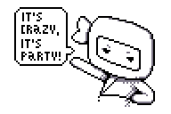
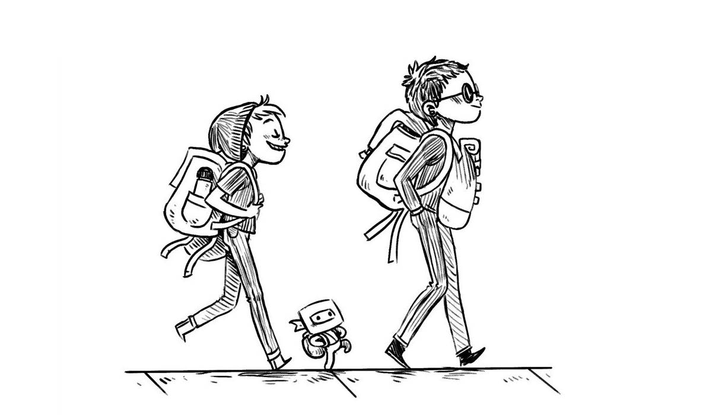
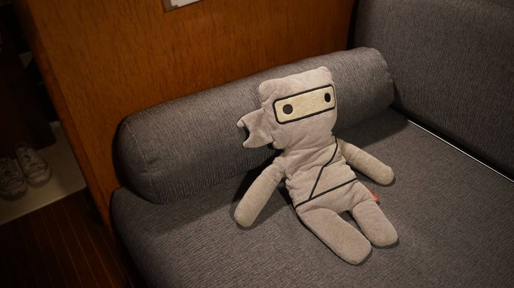

little ninj
Little Ninj is a 38 cm (15 in) tall, gray, soft-bodied ninja that lives aboard Pino with us. He is 16 years old, and was conceived by artist Michelle Valigura. We adopted him in 2009, and we've traveled all over the world together.
Ninj has been to Japan, England, Fiji, Thailand, The Marshall Islands, France, Germany, Niue, Tonga, French Polynesia, Mexico, Australia, New Zealand, The Cook Islands, and Austria.
He is most active at night, he hosts boat parties in our absence, and often goes out on diplomatic missions when we arrive in a new port. Little Ninj was responsible for ensuring us safe passage through the forests of Cortes Island when he negotiated with Jeebaleebus, the local banana slug authority of the region.
Contrary to what some people believe, Ninj is not a small human child. He is bead/fiberfill-blooded, and will likely outlive us all.
Ninj likes...
Gathering minions
Being served food and then watching the food
Working on his blog
Ninj doesn't like...
Getting wet
Traveling in a backpack
Being told not to pummel popcorn into dust
Ninj appreciation gallery